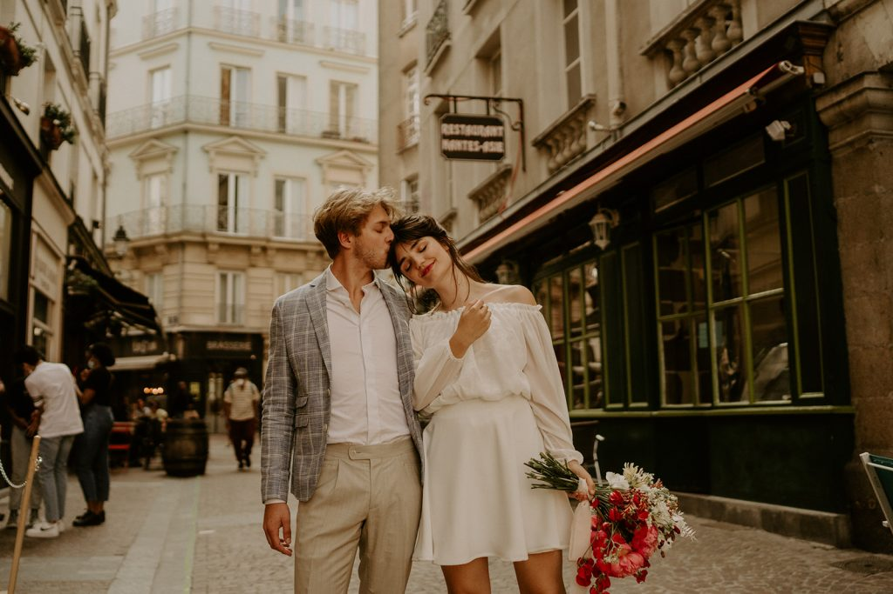

Lille Métropole · Flandres · France–Belgique
Le bon prestataire.
Pour le grand jour.
Photographie publiée par Atelier CoqlicoSource officielle ↗
L’annuaire local
Des adresses à découvrir.
Sans rien inventer.
Lille Métropole, les Flandres et le bassin transfrontalier France–Belgique. Chaque fiche s’appuie sur une source publique et cette sélection n’est pas exhaustive.
À vous de choisir le point de départ : recherchez un métier, un nom ou une ville, puis affinez par territoire ou catégorie. Les fiches s’affichent uniquement après une recherche ou un filtre.